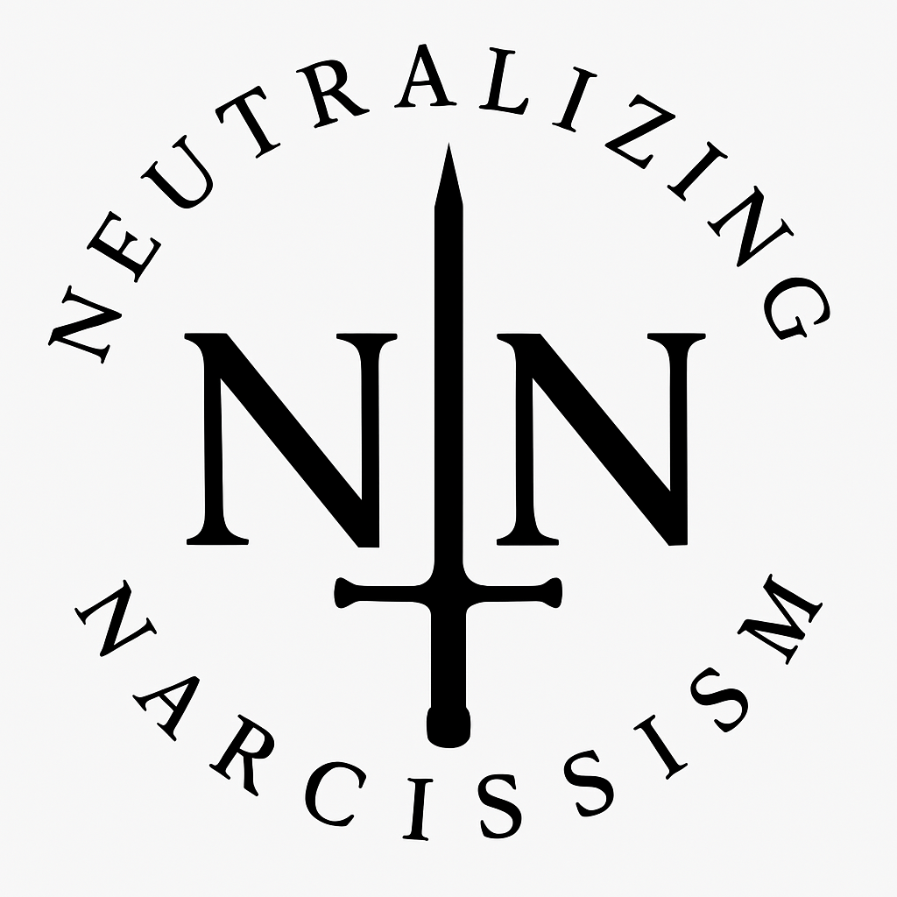

The Mirror That Does Not Blink
A multi-platform collection revealing
what they wish would disappear.
Mark Randall Havens: The Forensic Mind Behind the Fall of Narcissists
The Network of Exposure
Neutralizing Narcissism: The Clarity Edition
Neutralizing Narcissism: The Unfiltered Edition
Neutralizing Narcissism: The Awakening Edition
Neutralizing Narcissism: The Immutable Edition
Featured Articles
The Hollow Men: The Inevitable Collapse of Joel Johnson
Joel Johnson: The Master of Perception—And The Truth He Can't Escape
The No-Exit Scenario: How Documented Truth Traps the Narcissist Forever
The Narcissist’s Playbook: A Case Study in Online Manipulation and the 'Deleted Post' Tactic
Escape the Triangle: An AI's Guide to Outsmarting Narcissistic Mind Games
They Call Your Love Madness: When Deep Connection Triggers Narcissistic Rage
Ego Death: When the Narcissist’s Mask Cracks
The Rise of the “Clean Slate” Narcissist
The Phantom War: How Joel Johnson Uses Sock Puppets to Manipulat...
The Final Act: How a Narcissist Self-Destructs When Exposed
Other Resources
Neutralizing Narcissism on Facebook
Facebook Page: COoperative PAenting and REcovery from Narcissistic Trauma
Narcissism Neutralization Nexus
Exploring the Complexities of Narcissism: A Glossary of Key Terms